2020 - 2021
合作夥伴：產品經理、研發團隊
本專案要為一項新的語音合成 AI 演算法找出市場定位，並在現有研發資源下，做出能滿足使用者需求的產品。
方向是一項文字轉語音（TTS）服務，可整合到支援語音的應用程式或裝置，合成中文語音。
# 開發 MVP 以識別消費者偏好。
# 與產品經理合作制定軟體需求。
# 建立 UI 流程與 GUI 規格，跨研發團隊完成 2 個網站、1 個 App 與 1 個硬體產品 UI。
# 在傳統開發環境中建立數據驅動的敏捷開發模式。
建立最小可行產品來尋找市場需求
本專案的第一個問題是開發時間太慢，無法支撐這類型的專案，而且專案結束時必須推出完整的應用程式。但我們需要一個簡單的原型來探索市場，驗證我們的核心功能是否有需求。為解決這個問題，我透過以下調整來加速開發。
1. 定義我們要探索的市場，詳細規格與優先順序：
根據市場情況，讓功能在路線圖或 PRD 中的選擇或排序更有邏輯。 在市場區隔方面，透過業務回饋，我們定義了兩個目標市場來測試原型：
1. 小型企業（如 YouTuber） 2. 企業員工（如新聞記者）
我們使用不同的銷售策略，並建立兩個能滿足不同場景且更容易進行功能取捨的應用程式。小型企業透過行銷推廣，企業透過業務與商務開發推廣。
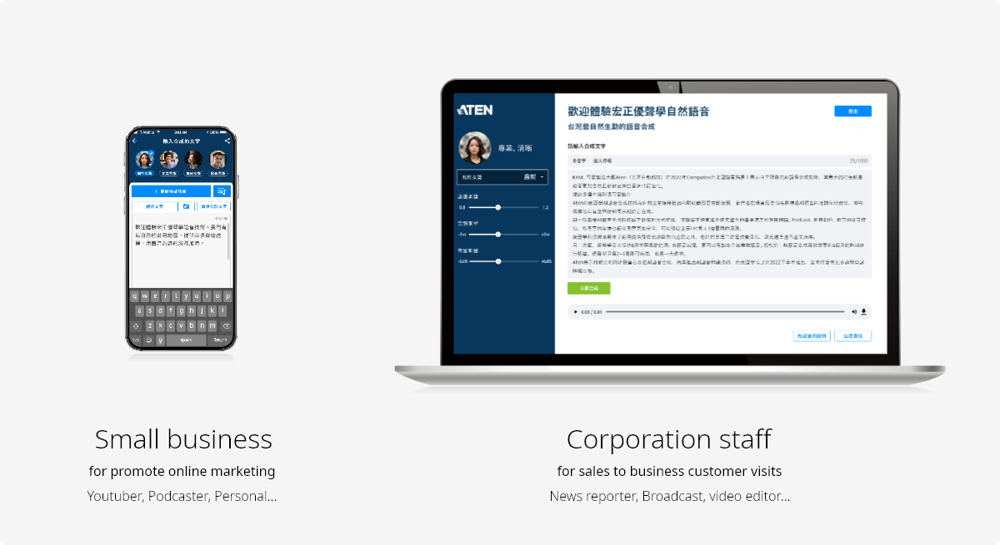
2. 在限制條件下靈活調整規格，降低 QA 成本與時程
建立快速溝通工作流程，與研發團隊更緊密合作，根據困難度或限制條件調整規格、框架、互動及其他細節。
重新定義哪些功能需要驗證，例如可支援多少手機型號或瀏覽器。
透過上述調整，專案的 NRE（非經常性工程費用）可大幅降低，專案規模也會縮小。這能讓產品經理有更多空間為此解決方案啟動下一個專案。
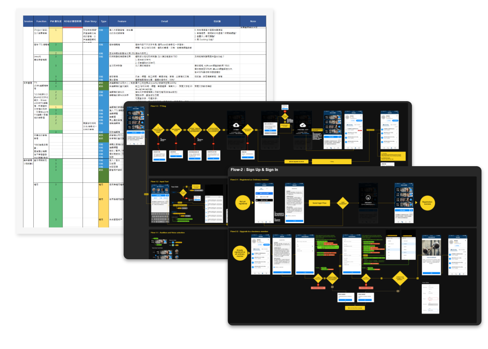
根據市場與業務回饋，我們發現了一些潛在的市場需求，並針對此提出了設計提案：
提案一：用你的聲音翻譯： 在多語言情境中使用講者自己的聲音，拉近與聽眾的距離。
許多企業在國際遠距會議／研討會中會使用口譯員配音，而這在封城期間變得越來越頻繁。但這往往導致與聽眾產生距離感。在某些情境中，需要使用自己的聲音來拉近與聽眾的距離。
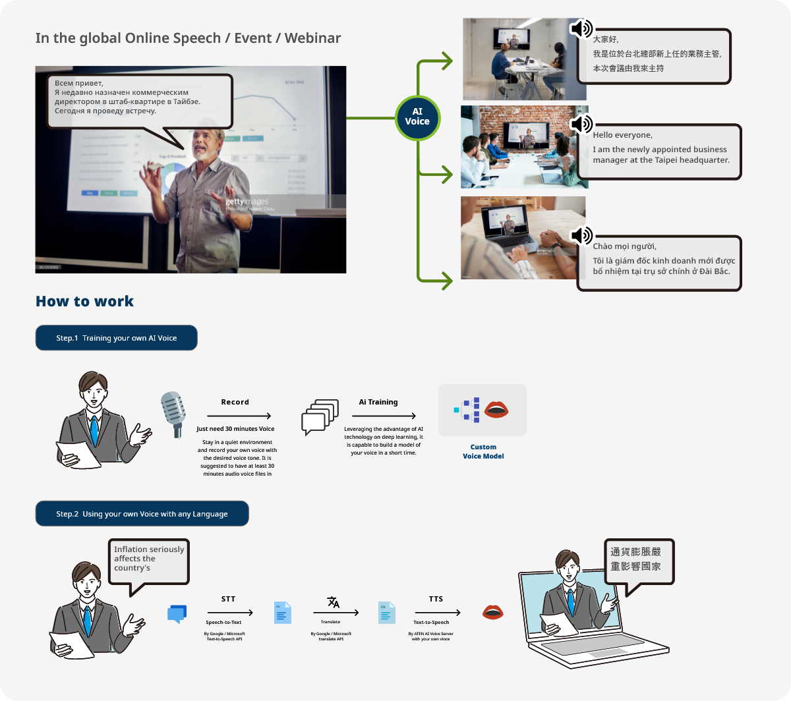
提案二：大量聲優的快速語音生成服務： 提供安全且專屬的租賃式私有雲伺服器，搭載多位聲優
隨著 Podcast 蓬勃發展，聲音經濟正在崛起。市場上許多新聞、雜誌、故事書等文稿需要由不同的聲音轉換為語音。
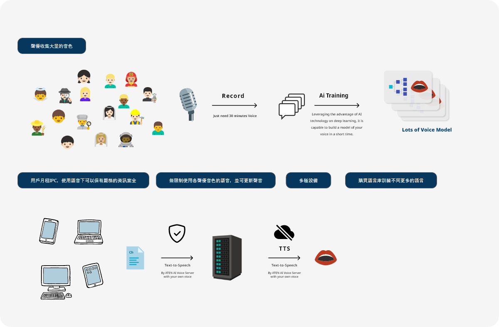
根據技術可行性與通路策略，產品經理選擇提案二作為開發方向。
我們透過使用者旅程地圖定義功能並開始設計。
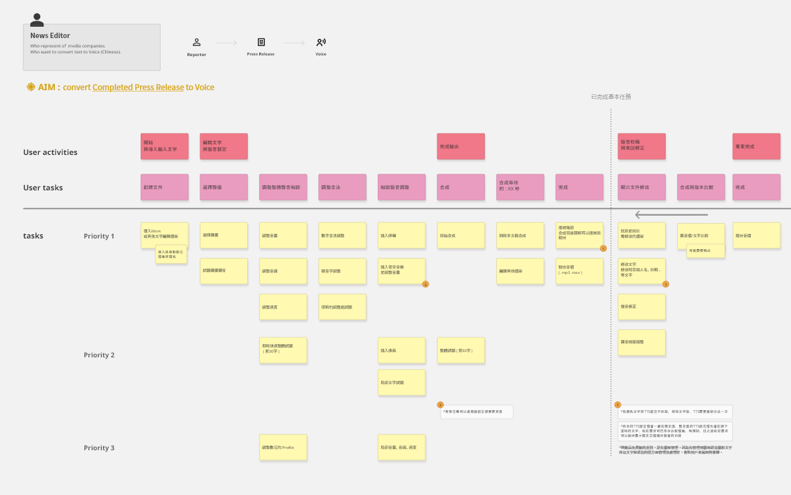
此旅程地圖顯示記者如何在本服務中完成目標。
主介面與使用流程
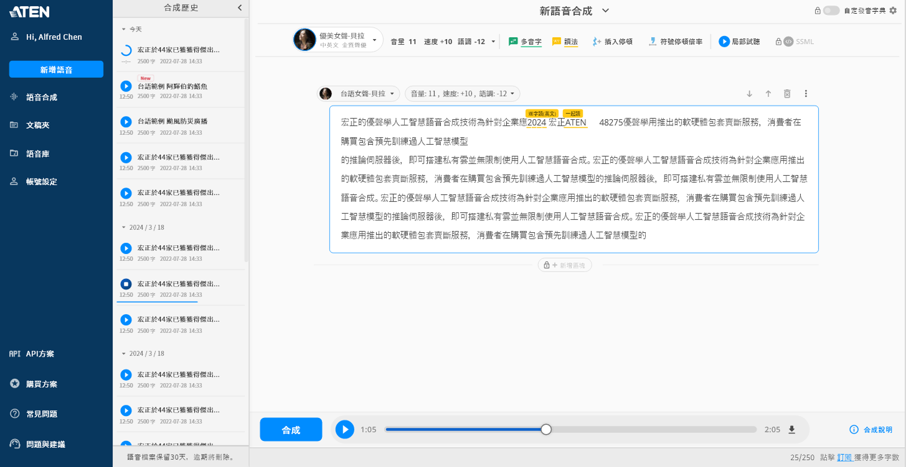
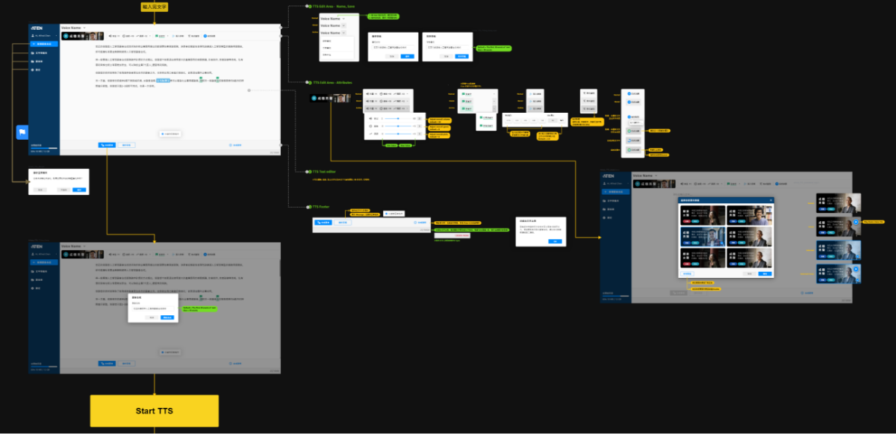
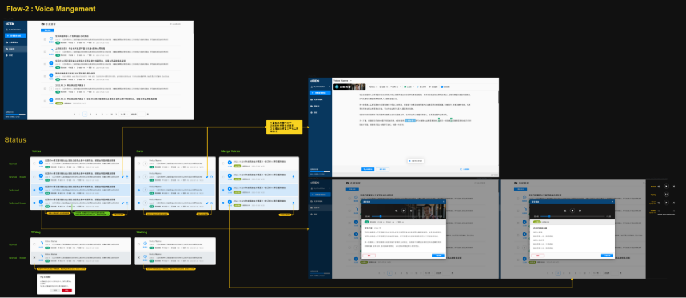
介面規格與元件
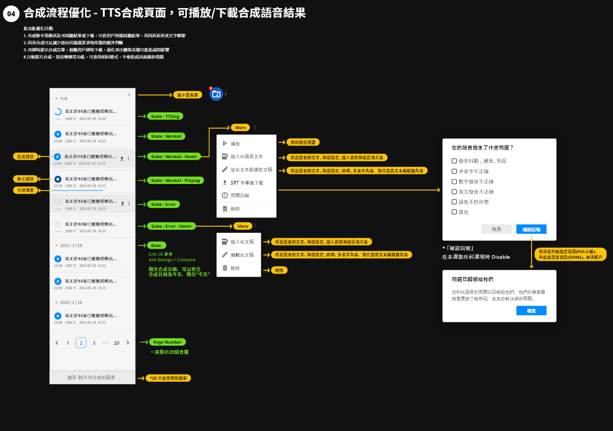
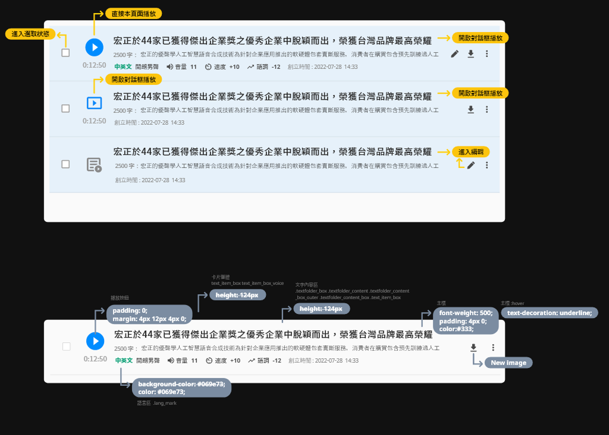
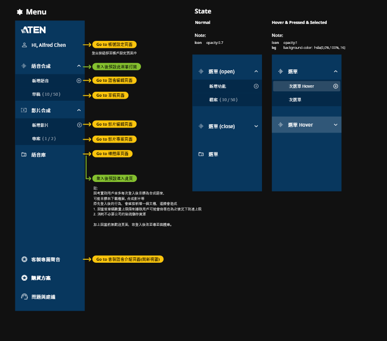
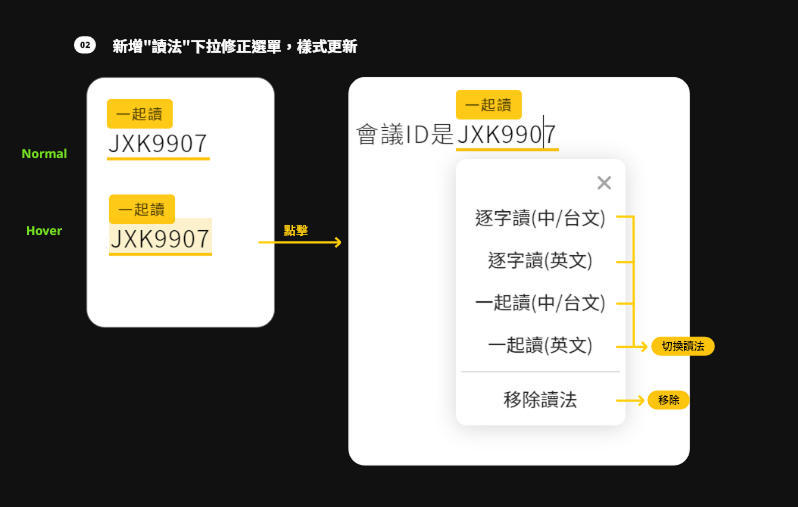
漸進式網頁應用程式（RWD）
設計考量開發難度並強化 RWD 互動體驗；透過行動裝置建立語音時，這個網站服務擁有類似 App 的使用行為。
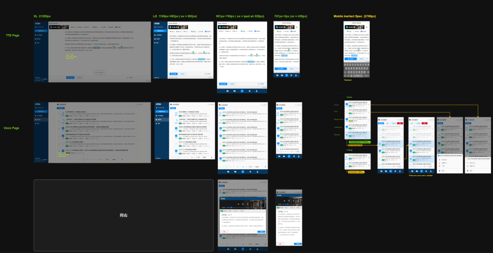
企業功能
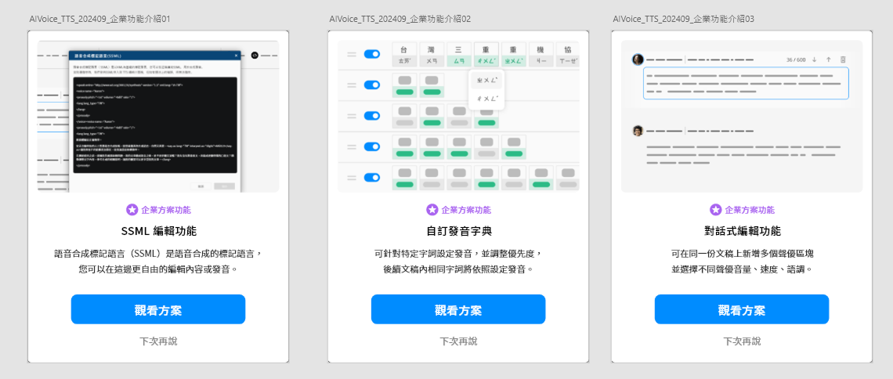
這個專案從探索市場的 MVP 起步，後來成為 ATEN 正式商用產品「優聲學 AI Voice」，提供網站、App 與 API／SDK 等多種形式。產品上線後持續演進，陸續支援台語、客語、地端 Edge 部署與企業品牌客製語音。線上產品：aivoice.com.tw
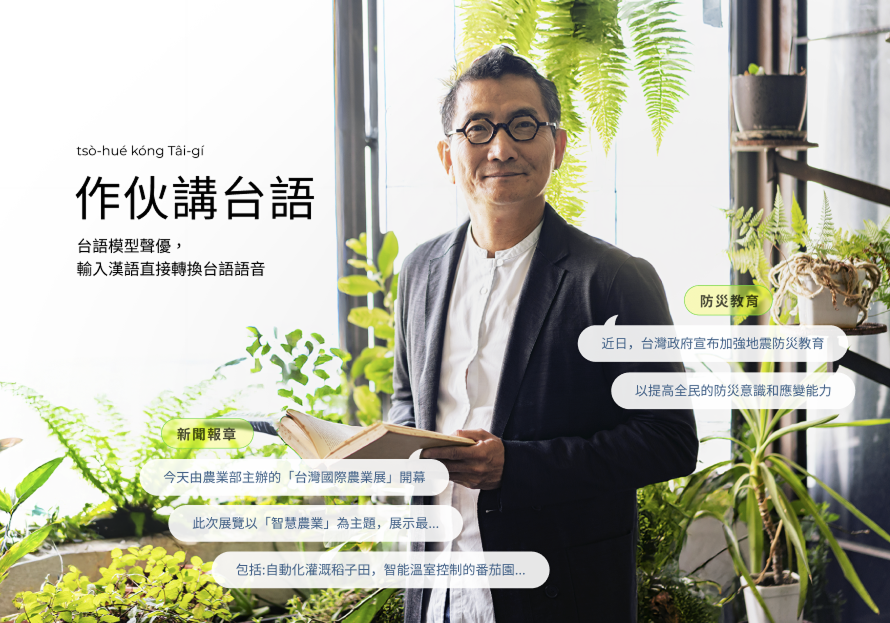
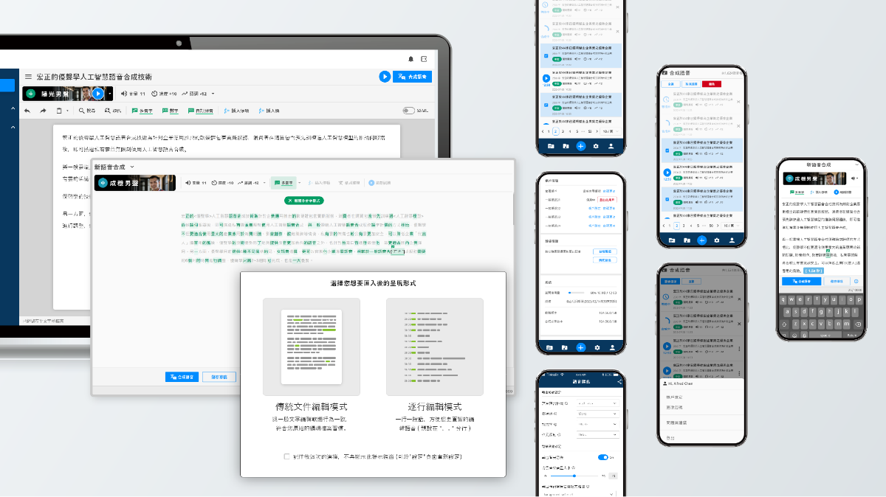
產品另推出邊緣運算的硬體版（AI Voice Edge，地端運作、不需連網），裝置端提供 OSD 設定介面——API 資訊、系統狀態與網路設定等。
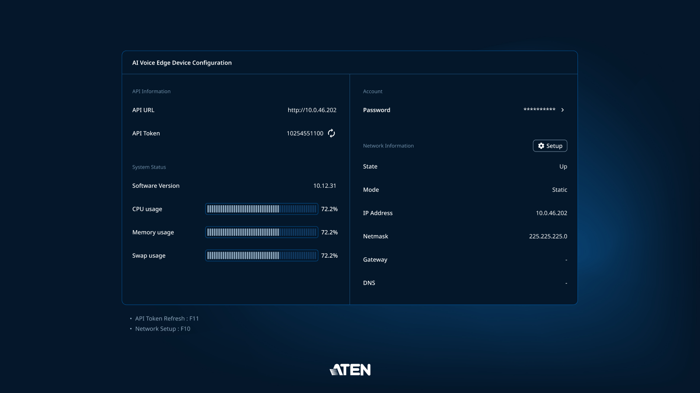